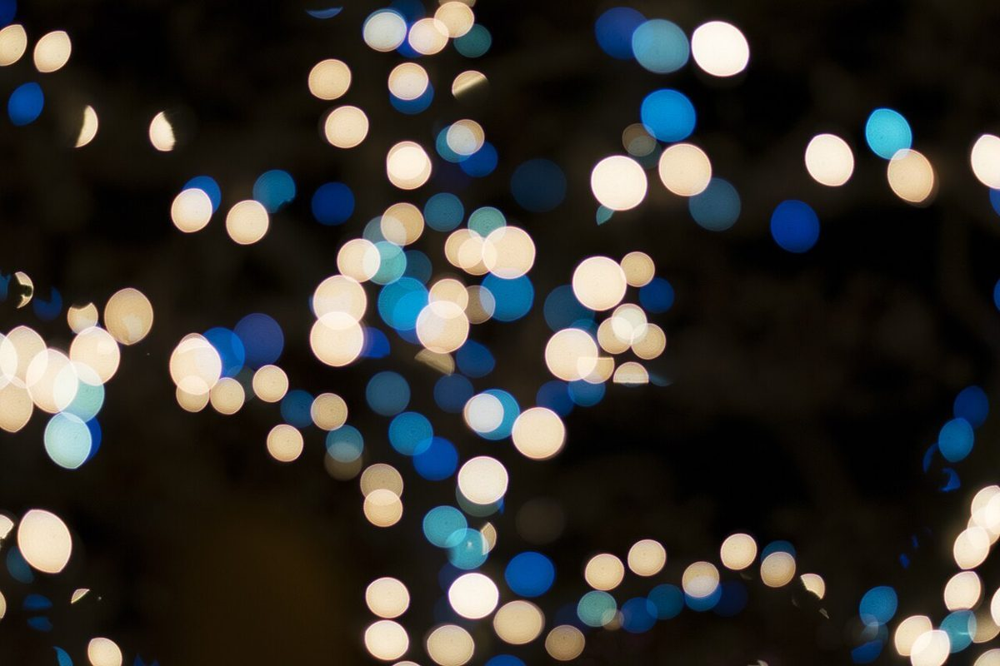

制作側の連想
屋号の「ランプの灯り」から、明るさの階段を。
店名の由来は分かりません。制作側は「Lamp Light(ランプの灯り)」という響きから、明るさの段階を連想しました。このページは、星明かりから晴れた空までを、照度の単位ルクス(lx)の階段として並べています。これは制作側の連想で、お店の理念・由来・店内の明るさとは無関係です。
数字は「おおよその目安」で、実際の測定値ではありません。写真はすべてフリー素材のイメージです。
- 010.2lx
満月の夜

満月の夜(イメージ) - 021lx
ろうそく1本

ろうそくの炎(イメージ) - 0320lx
光の粒

光の粒(イメージ) - 0450lx
電球ひとつ
- 05100lx
吊り下げの明かり

吊り下げの照明(イメージ) - 06400lx
夕暮れ
夕暮れの空(イメージ) - 071,000lx
窓辺の光

窓の光とマグカップ(イメージ) - 0850,000lx
晴れた空

晴れた空(イメージ)
ご案内
お店のこと(確認できたものだけ)
| 所在地 | 〒080-0013 北海道帯広市西３条南１丁目１１ |
|---|---|
| 電話 | なし |
| 営業時間 | 準備中 |
| 定休日 | 準備中 |
| ご予約 | 準備中 |
| 駐車場 | 準備中 |
| SNS | Instagram @lamp_light_coffee |